Kuzey Atina'nın köklü semti Chalandri'de, avlu çevresinde iki binadan oluşan yeni rezidans. Otoparklı 1+1'ler, geniş planlar ve dubleksler; metro yürüyerek 12 dakika. Künye, fiyatlı daire listesi, bölge ve proje raporları — riskleriyle birlikte.
32
Müsait daire
€267.000 – €400.000
Fiyat aralığı
2028 · 2. çeyrek
Teslim
3 yıl · %3
Kira garantisi
Dosya Notu
Neden bu proje?
Bu dosya tek bir proje için hazırlandı ve üç ölçüt üzerine kuruldu: Kuzey Atina'nın yerleşik bir semti, metroya yürüme mesafesi ve talebi turizme değil kurumsal istihdama dayanan bir kiracı tabanı. Chalandri'de hastane kümesi, köklü okullar ve kuzey ofis aksı birbirinden bağımsız üç istihdam kaynağı olarak aynı semtte kira talebi üretir.
Proje, Chalandri merkezinde iki bina ve bir peyzajlı avludan oluşur: 45 konut, enerji sınıfı A, ısı pompası, çoğunda otopark. Aşağıda önce Golden Visa çerçevesini, sonra konumu, ardından projenin künyesini bulacaksınız. Bölümün sonunda dört açılır rapor var: fiyatlı daire listesi, bölge raporu, proje raporu ve yatırım fizibilitesi. Güçlü yanları kadar zayıf yanları da yazdık.
Müsaitlik ve fiyat sorumluluğu: Bu sayfadaki fiyat ve müsaitlik bilgisi, geliştiricinin bize ulaşan 29 Eylül 2026 tarihli listesine dayanır. Müsaitlik kısa sürede değişebilir; Avla bu bilgilerin güncelliği konusunda sorumluluk üstlenmez. Ticari koşullar da aynı kaynağa dayanır ve bağlayıcı teklif değildir. Bağlayıcı karar öncesinde dairenin durumunu ve size sunulan ticari koşulları geliştiriciden yazılı olarak birlikte teyit ederiz.
Bu sayfa tek bir mülk için hazırlanmıştır. Künyesi, fiyatlı daire listesi, bölge ve proje raporları burada bir arada verilmiştir. Mülkü gezmek ya da bağlayıcı bir adım atmak istediğinizde, tanıtımı kayda geçiren yer gösterme formunu birlikte doldururuz; şartlarımızı ve modelimizi buradan inceleyebilirsiniz.
Yunanistan Golden Visa — kısa hatırlatma
Eşik tek bir rakam değildir: €250.000 / €400.000 / €800.000Eş + 21 yaş altı çocuklar + her iki tarafın ebeveynleri5 yılda bir yenilenen oturumAsgari ikamet şartı yokUzun dönem kiralama serbestBu bir oturma iznidir, vatandaşlık değildir
Önce Çerçeve
Golden Visa eşiği nasıl belirlenir?
Tek bir rakam yok. Mevzuat üç kademe tanımlıyor ve bir mülkün hangi kademeye girdiği, konumu ve hukuki durumu ile belirlenir. Bu nedenle Avla, portföydeki her proje için eşik teyidini teklif aşamasında yazılı olarak verir.
€800.000
Üst kademe Yoğun talep gören bölgeler için öngörülür. Tek bir mülk ve en az 120 m² şartı vardır.
€400.000
Diğer bölgeler Aynı şekilde tek mülk ve en az 120 m² şartı geçerlidir.
€250.000
Konuma bağlı değildir Yalnızca iki halde: (a) konut dışı bir binanın kullanım değişikliği ile konuta dönüştürülmesi (dönüşüm 5 Nisan 2024 sonrası yapılmış ve başvurudan önce tamamlanmış olmalı), (b) tescilli / koruma altındaki bir binanın restorasyonu.
€250.000 rotasında yüzölçümü şartı yoktur; buna karşılık aynı tapuda birden fazla bağımsız konut ünitesi oluşturulamaz ve konut 5 yıl boyunca kısa dönem kiralamaya (günlük/haftalık) verilemez. Golden Visa uygunluğu ve geçerli eşik, daire bazında bağımsız Yunan avukat incelemesiyle yazılı teyit edilir.
1
Yazılı teyit İlgilendiğiniz daire için geliştiriciden güncel fiyat, müsaitlik ve eşik teyidi alınır.
2
Yerinde gezi Atina programını biz kurar, gezide size eşlik ederiz.
3
Rezervasyon ve hukuki inceleme Ön sözleşme ve kapora; ardından tapu geçmişi, ipotek/haciz, ruhsat ve iskân kontrolü.
4
AFM, banka, noter, tapu Vekâletle yürütülebilir; Yunanistan'da bulunmanız şart değildir.
5
Oturum başvurusu Biyometrik randevu, mavi kart, ardından oturum kartı ve 5 yılda bir yenileme.
Coğrafya
Chalandri Court Residences haritada
Konum semt düzeyinde çember ile gösterilmiştir. Net adres bilgisi, bizimle iletişime geçen misafirlerimizle bizzat paylaşılır.
Chalandri · Kuzey Atina
🔒
Net konum bilgisi kilitli
Bu dosyada mülkün neredeyse tüm bilgisi açık; yalnızca net konumunu yayınlamıyoruz. Net konum için bizi arayın — uzman danışmanımız gerekli bilgilendirmeyi yapar, konumu paylaşır ve sunumu bizzat gerçekleştirir. Dilerseniz sayfa sonundaki kısa formu KVKK kapsamında doldurun; biz sizi arayalım. Şartlarımız ve modelimiz →
Chalandri · Kuzey Atinaİnşaat sürüyor · 2028 2. çeyrek
Chalandri Court Residences
Kuzey Atina'nın köklü semti Chalandri'nin merkezinde, peyzajlı bir avlunun çevresinde iki binadan oluşan yeni proje: 45 konut — 1+1 daireler, iki geniş plan ve çatı katlarında dubleksler. Enerji sınıfı A, ısı pompası, Grohe armatür; dairelerin çoğunda otopark yeri var. Metroya yürüyerek 12 dakika, büyük hastanelere yaklaşık 900 m.
Durum: İnşaat sürüyor · teslim 2. çeyrek 2028 (sözleşmede 3 ay tolerans). Projede 3 yıl boyunca yıllık %3 kira garantisi var. Şu an 32 daire müsait.
Giriş fiyatı €267.000'dan başlayan, A enerji sınıflı ve metroya yürüme mesafesindeki bu proje; hastane, okul ve ofis aksının 1+1 kiracı talebini hedefler. Net alanda €/m² bandı dardır (€6.761 – €7.254): fiyatlama daire bazında tutarlıdır.
Künye
Ref
A0223
Semt
Chalandri · Kuzey Atina
Yapı tipi
Yeni yapı (sıfır bina) · iki bina, peyzajlı avlu · 45 konut · enerji sınıfı A
Yakın okullar
ACS Athens (uluslararası · Amerikan Diploması + IB; metro istasyonuna ~660 m) · Athens College ve Arsakeio (köklü özel okullar) · St Catherine's British School ve Campion School (İngiliz müfredatlı özel) · devlet: 1. ve 2. Anaokulu, 1. ve 4. İlkokul, 2. Ortaokul ve Lise (~1 km)
Teslim
İnşaat sürüyor · 2. çeyrek 2028 (sözleşmede 3 ay tolerans)
Müsait daire
32 daire · son güncelleme 29 Eylül 2026
Fiyat aralığı
€267.000 – €400.000
Net m²
38,3 – 57,3 m²
Brüt m² (balkon dahil)
48,3 – 106,3 m²
€ / m² net
€6.761 – €7.254
€ / m² brüt
€3.763 – €6.230
Kira garantisi
Var — 3 yıl, yıllık %3
Otopark
45 konutun 33'ünde dahil · depo yok
Donanım
Isı pompası, Avrupa mutfağı, Grohe armatür
Golden Visa
Golden Visa uygunluğu ve geçerli eşik daire bazında, bağımsız Yunan avukat incelemesiyle yazılı teyit edilir.
Görseller · 12 görsel
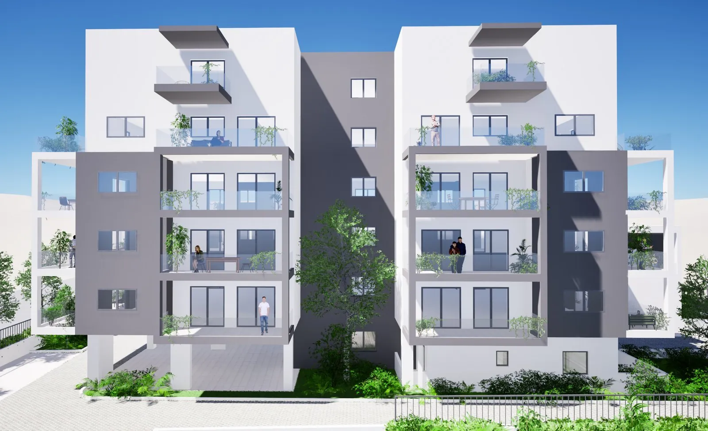
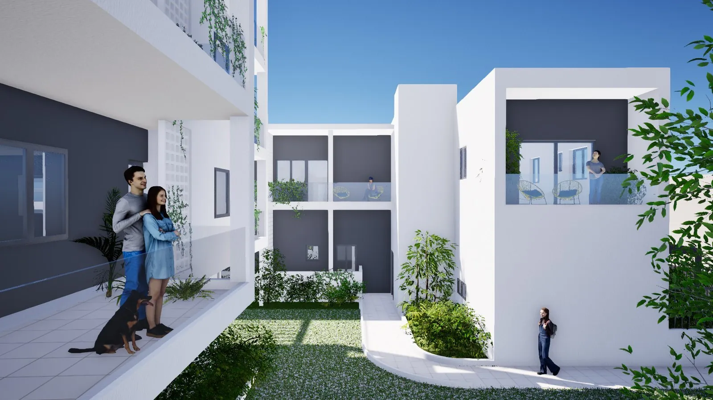
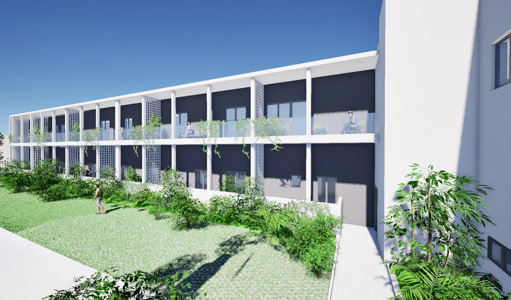
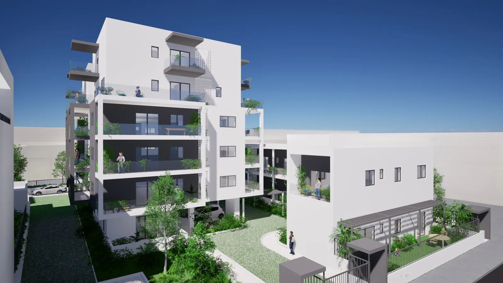
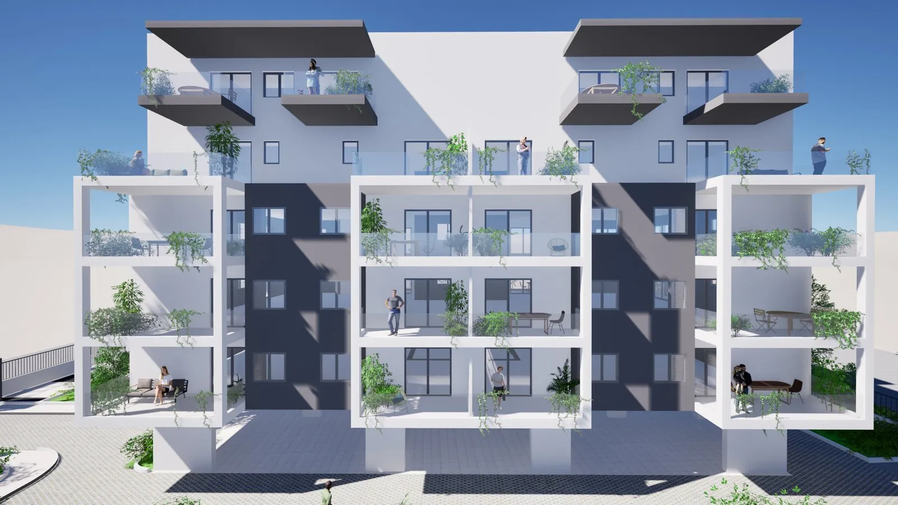
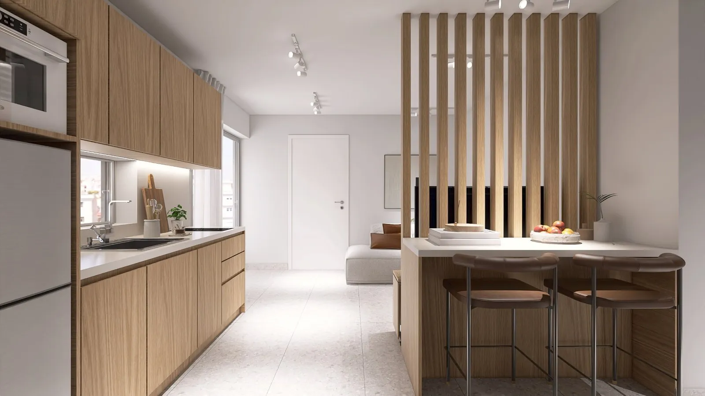
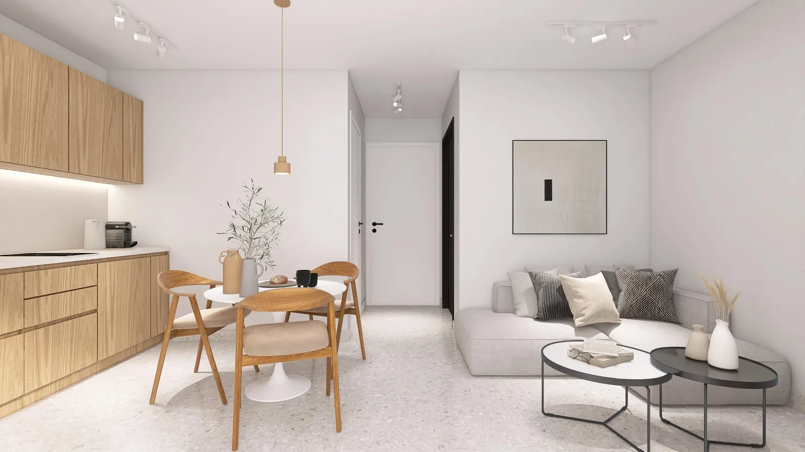
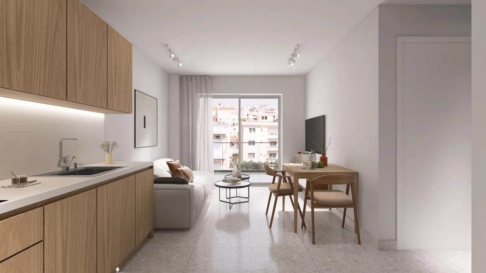
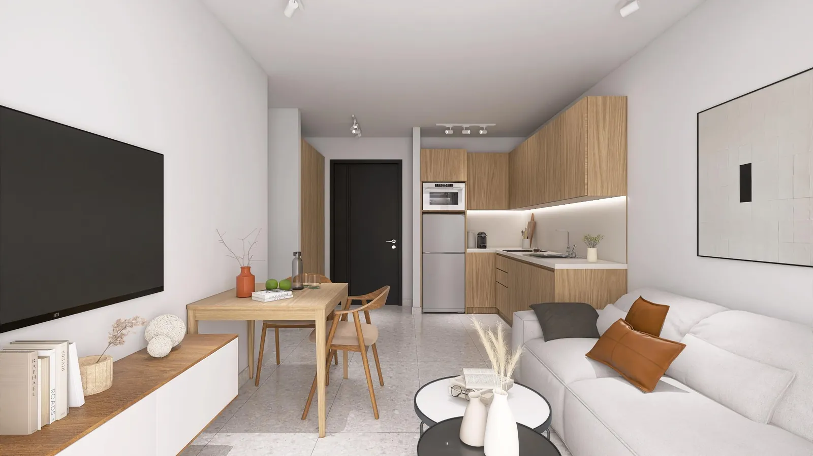
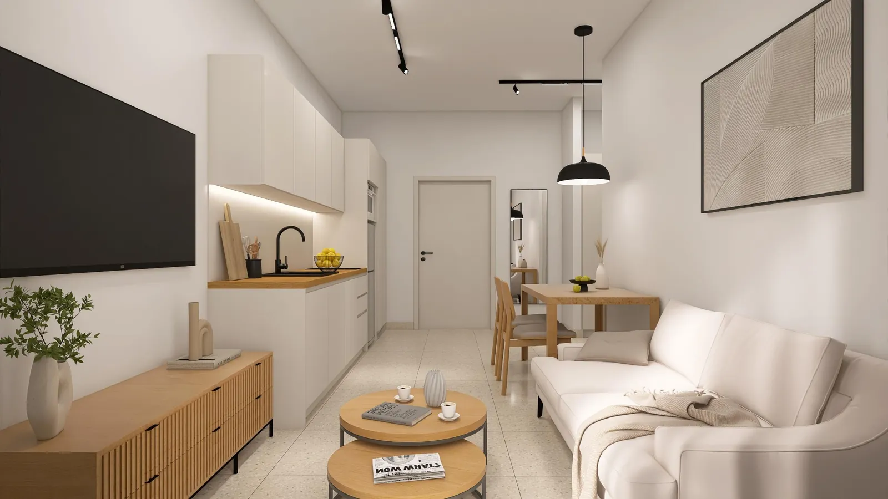
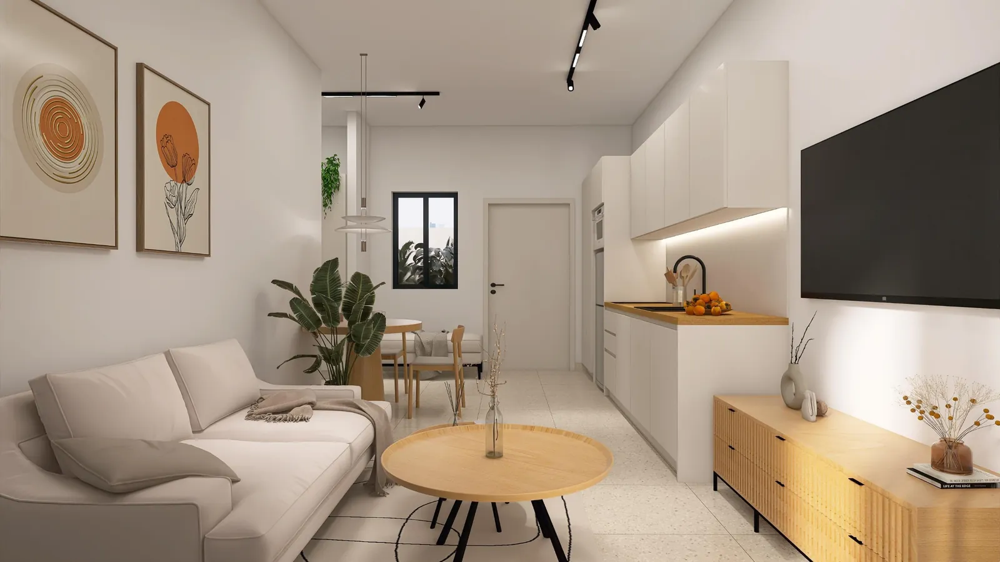
Kaydırın →
Görseller geliştiricinin tanıtım çalışmalarıdır; iç mekân görselleri bilgisayar üretimi temsilî görsellerdir ve nihai uygulamayı birebir yansıtmayabilir.
Fiyatlar ve müsait daireler
Fiyatlar ve müsait daireler — 32 daire
Daire
Kat
Tip
Net m²
Balkon m²
Brüt m²
Fiyat
€ / m² net
€ / m² brüt
Plan
B 1.2
1
1+1
38,3
13
51,3
€267.000
€6.971
€5.205
B 1.4
1
1+1
38,3
14
52,3
€268.000
€6.997
€5.124
B 1.3
1
1+1
38,3
17
55,3
€271.000
€7.076
€4.901
A 1.4
1
1+1
39,5
9
48,5
€276.000
€6.987
€5.691
A 1.5
1
1+1
39,5
9
48,5
€276.000
€6.987
€5.691
A 1.3
1
1+1
39,5
11
50,5
€278.000
€7.038
€5.505
A 1.6
1
1+1
39,5
11
50,5
€278.000
€7.038
€5.505
A 1.8
1
1+1
39,5
13
52,5
€280.000
€7.089
€5.333
A 2.4
2
1+1
39,5
9
48,5
€280.000
€7.089
€5.773
A 2.5
2
1+1
39,5
9
48,5
€280.000
€7.089
€5.773
B 1.1
1
1+1
40,3
9
49,3
€281.000
€6.973
€5.700
B GF.3
Zemin
1+1
40,3
8
48,3
€281.000
€6.973
€5.818
A 2.6
2
1+1
39,5
11
50,5
€282.000
€7.139
€5.584
B GF.1
Zemin
1+1
40,3
9
49,3
€282.000
€6.998
€5.720
A 1.2
1
1+1
39,3
17
56,3
€284.000
€7.226
€5.044
A 1.7
1
1+1
39,3
17
56,3
€284.000
€7.226
€5.044
A 2.1
2
1+1
39,5
13
52,5
€284.000
€7.190
€5.410
A 2.8
2
1+1
39,5
13
52,5
€284.000
€7.190
€5.410
B GF.2
Zemin
1+1
40,3
12
52,3
€285.000
€7.072
€5.449
A GF.1
Zemin
1+1
42,3
22
64,3
€286.000
€6.761
€4.448
B GF.4
Zemin
1+1
41,3
9
50,3
€289.000
€6.998
€5.746
B GF.5
Zemin
1+1
41,3
13
54,3
€289.000
€6.998
€5.322
B M.1
Zemin–1 (dubleks)
Dubleks
42,3
16
58,3
€290.000
€6.856
€4.974
A M.3
4–5 (dubleks)
Dubleks
44,8
25
69,8
€319.000
€7.121
€4.570
A M.8
4–5 (dubleks)
Dubleks
48,3
23
71,3
€340.000
€7.039
€4.769
A M.1
4–5 (dubleks)
Dubleks
48,3
23
71,3
€341.000
€7.060
€4.783
A M.4
4–5 (dubleks)
Dubleks
48,8
21
69,8
€353.000
€7.234
€5.057
A M.5
4–5 (dubleks)
Dubleks
48,8
21
69,8
€353.000
€7.234
€5.057
B 1.5
1
2+1
52,3
5
57,3
€357.000
€6.826
€6.230
A M.2
4–5 (dubleks)
Dubleks
52,8
27
79,8
€383.000
€7.254
€4.799
A M.7
4–5 (dubleks)
Dubleks
52,8
27
79,8
€383.000
€7.254
€4.799
B GF.6
Zemin
2+1
57,3
49
106,3
€400.000
€6.981
€3.763
Fiyatlar ilan fiyatlarıdır; son güncelleme 29 Eylül 2026. Brüt alan balkon ve bahçe dahildir. Bağlayıcı fiyat ve güncel müsaitlik, teklif aşamasındaki yazılı teyitle sabitlenir. Alanlarda ±%3 tolerans vardır.
Kat planları
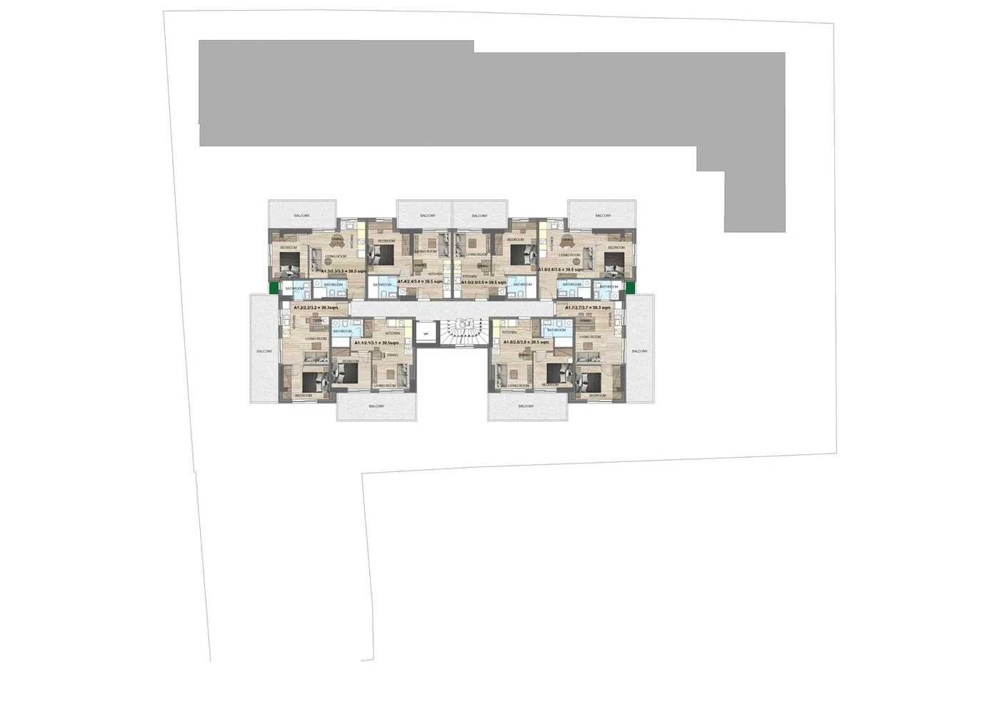
A blok · 1–3. katlar
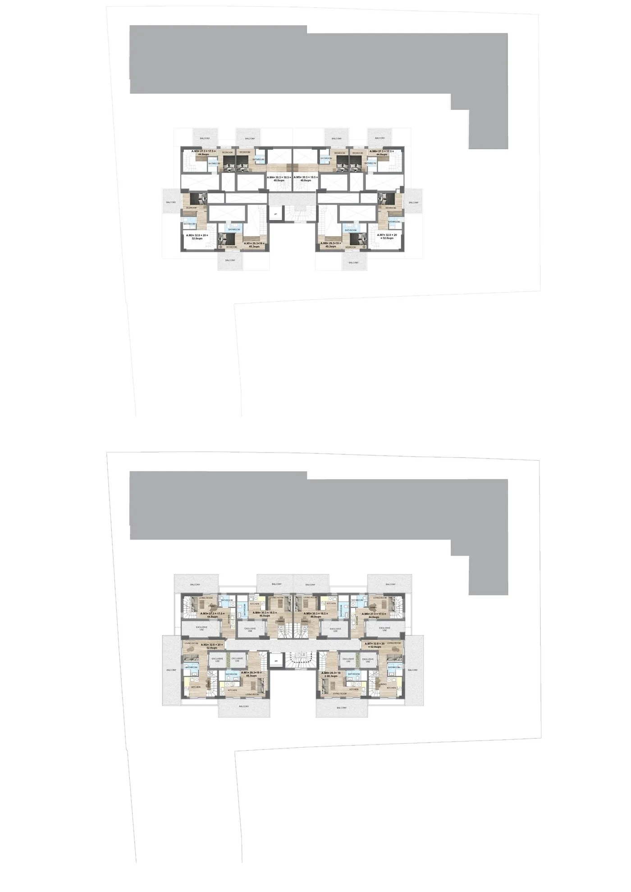
A blok · 4–5. katlar (dubleks)
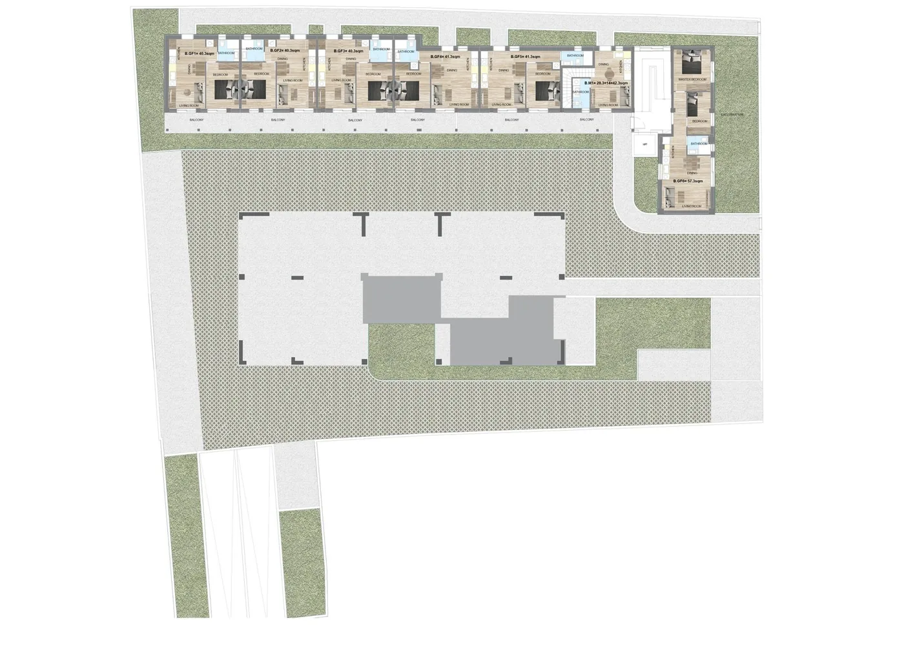
B blok · zemin kat ve avlu
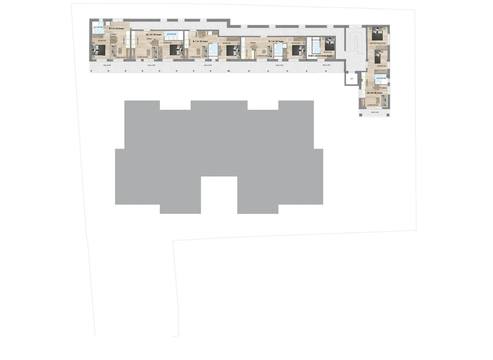
B blok · 1. kat
Bölge raporu · Chalandri
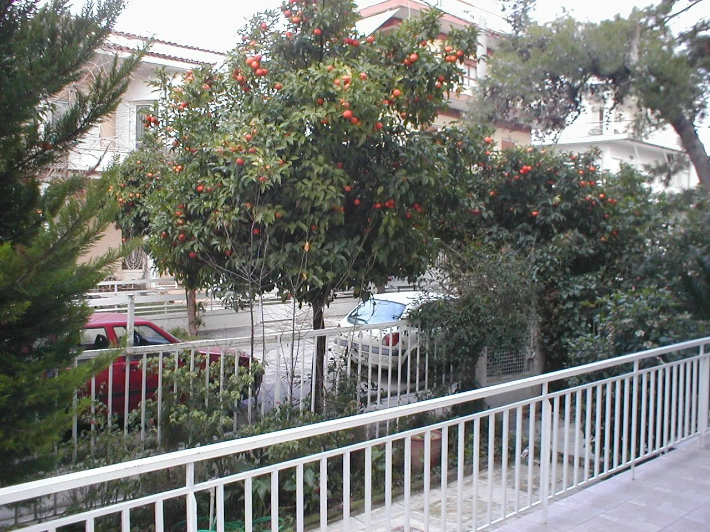
Foto: Молли · CC BY-SA 3.0 · Wikimedia Commons
Avla Gayrimenkul A.Ş. Bölge Raporu · Chalandri · Kuzey Atina · 16 – 23 Eylül 2026 · Fiyat ve kira verileri Ağustos 2026 referans dönemlidir. Semt düzeyinde bir değerlendirmedir; belirli bir daire incelemesi içermez.
Yönetici özeti
Chalandri, Kuzey Atina'nın yerleşik orta-üst gelirli yerleşim semtlerinden biridir. Şehre uzak bir yatak banliyösü değil, kendi çarşısı, kafeleri, restoranları ve butikleriyle gün boyu işleyen bir semt merkezidir. Konut talebini ayakta tutan üç yapısal unsur bir arada bulunur: metro hattı üzerinden merkeze doğrudan erişim, semtin hemen yanındaki büyük özel hastane kümesi ve bölgedeki köklü okullar.
Yatırımcı açısından ayırt edici özellik, talebin turizm ya da kısa dönem kiralama çevrimine değil, yerleşik nüfusa ve kurumsal istihdama dayanmasıdır. Bu, sezon dışı boşluk riskini ve mevzuat kaynaklı oynaklığı görece düşüren defansif bir kiracı tabanı anlamına gelir. Buna karşılık merkez Atina'nın bazı mahallelerinde görülen hızlı değer sıçramaları Chalandri'de beklenmemelidir; semtin profili yüksek getiri değil, istikrarlı talep ve sermaye koruması üzerinedir.
Semtin kimliği
Chalandri, Atina merkezinin yaklaşık 12 km kuzeyinde, 10,8 km²'ye 77 binin üzerinde nüfus sığdıran bir Attika belediyesidir (1944'ten beri bağımsız belediye). Antik çağda Phlya demosuydu; 1922 sonrasında Anadolu'dan gelen mübadil aileler buraya yerleşti ve semtin kültürel dokusunda iz bıraktı. Bugünkü yapı stoku büyük ölçüde 1960'lar ve 70'lerin apartmanlaşma dalgasından kalmadır. Belediye tek parça bir doku değildir: Ano Chalandri, Kato Chalandri, Polydroso, Patima ve Agia Varvara gibi karakteri belirgin biçimde farklı mahalleleri barındırır. Birkaç yabancı büyükelçilik de semt sınırları içindedir.
Sayım yılı
Nüfus
Önceki sayıma göre
1981
54.320
—
1991
66.285
+%22,0
2001
71.684
+%8,1
2011
74.192
+%3,5
2021
77.102
+%3,9
Yüzde değişimler sayım rakamlarından hesaplanmıştır. 1990'ların patlaması bitmiştir; Chalandri büyüyen değil, dolmuş bir semttir — bu, konut arzının neden kısıtlı olduğunu da açıklar.
Ulaşım
Chalandri, Atina'nın kuzey ekseninde yer alır ve şehrin iki ana ulaşım omurgasına aynı anda bağlanır: raylı sistem ve Attiki Odos otoyolu. Metro Hattı 3 (mavi) semtin içinden geçer (Chalandri istasyonu 2004'te açıldı), Doukissis Plakentias'ta banliyö treniyle birleşir. Belediye sınırını Attiki Odos, Kifisias Bulvarı ve Mesogeion Bulvarı çizer; belediyeye toplam beş metro istasyonu hizmet eder (Chalandri, Doukissis Plakentias, Agia Paraskevi, Nomismatokopio, Cholargos). Otobüs tarafında 27 OASA hattı ile 4 belediye hattı bulunur.
Hedef
Ulaşım biçimi
Yaklaşık süre / mesafe
Metro istasyonu
Yürüyerek
~12 dakika
Hastane kümesi (Ygeia · Mitera · Iaso)
Yürüyerek
~900 m
Golden Hall alışveriş merkezi
Araç / kısa mesafe
~1,5 km
Olimpiyat Stadı çevresi
Araç / kısa mesafe
~1,5 km
Atina merkezi (Sintagma aksı)
Metro
yaklaşık 20–25 dakika
Kuzey iş koridoru (Marousi–Kifisia yönü)
Metro / araç
yaklaşık 10–20 dakika
Atina Uluslararası Havalimanı
Attiki Odos üzerinden araç
yaklaşık 25–35 dakika
Süreler ve mesafeler yaklaşık değerlerdir; trafik yoğunluğu, sefer sıklığı ve semt içindeki başlangıç noktasına göre değişir.
Havalimanından Doukissis Plakentias'a doğrudan tren vardır (15–25 dakikada bir); havalimanı–Larissis banliyö treni yaklaşık 45 dakikadır. Havalimanı taksisi merkeze sabit tarifelidir (40 € / gece 55 €). Ulaşım avantajı semt içinde eşit dağılmaz: belediye 10,8 km² olduğundan metro istasyonları ağırlıklı olarak çeperdedir; mülk bazında yürüme süresi ayrıca ölçülmelidir. Metroya yürüme mesafesi, araç sahibi olmayan kiracı için Chalandri'de kira talebini doğrudan belirleyen unsurdur.
Okullar
Semtin en bilinen kurumu 1945'te kurulan American Community Schools of Athens (ACS Athens)'dır: anaokulundan 12. sınıfa 1.219 öğrencisi, 60'tan fazla uyruktan öğrenci profili vardır; Amerikan Diploması ve Uluslararası Bakalorya birlikte sunulur (metro istasyonuna yaklaşık 660 m). Avla bölge raporu ayrıca Athens College ve Arsakeio'yu Atina'nın en köklü özel eğitim kurumları arasında, semtin eğitim çevresinde sayar. İngiliz müfredatlı özel okullardan St Catherine's British School ve Campion School çevrede tercih edilenlerdir.
Devlet okulları: 1. ve 2. Anaokulu, 1. ve 4. İlkokul (Chalandri Belediyesi okul listesi); 2. Ortaokul ve Lise metro istasyonuna yaklaşık 1 km mesafededir. Okul çevresi talebi, kira sözleşmelerinin görece uzun süreli olması eğilimini güçlendirir.
Sağlık
Yunanistan'ın en yoğun özel hastane kümesi Kifisias ve Mesogeion bulvarları üzerinde, Chalandri'nin sınırını çizen iki aksta toplanmıştır: Kifisias aksında HYGEIA (1970'te kurulan, 440 yataklı ilk büyük özel hastane) ve 501 yataklı MITERA; Mesogeion aksında IASO General. Küme semte yaklaşık 900 m mesafededir. Gayrimenkul açısından anlamı ikilidir: hekim, hemşire, idari personel ve uzun süreli refakatçilerden oluşan sürekli ve konjonktürden bağımsız bir kira talebi yaratır; ayrıca sağlık turizmi kaynaklı orta vadeli konaklama ihtiyacı için doğal bir arz alanıdır.
Alışveriş, yaşam, yeşil alan
Chalandri'nin ticari merkezi, ana meydan ve Agios Nikolaos kilisesi çevresindeki yaya bölgesidir; butikler, kafeler ve restoranlarla Kuzey Atina'nın diğer semtlerinden de alışverişçi çeker, gastronomi ve gece hayatı bakımından kuzey banliyölerinin en canlılarından biri sayılır. Yaklaşık 1,5 km mesafedeki Golden Hall alışveriş merkezi ve Olimpiyat Stadı çevresi semt ölçeğinin ötesinde perakende, spor ve etkinlik altyapısı sunar. Yeşil tarafta Rematia Chalandriou öne çıkar: Penteli Dağı'nın yamaçlarından inen, Attika'da uzun süreli akışı olan az sayıdaki dereden biri ve kentin kalan yeşil alanlarından biridir. Denize ve turistik merkezlere doğrudan yürüme mesafesi yoktur.
Kamusal yatırım ve gelişim projeleri
Hadrian Su Kemeri'nin yeniden işletimi (“Cultural HIDRANT”): belediyenin 2019 önerisi, Avrupa Birliği'nin Urban Innovative Actions programına sunulan 222 başvurudan seçilen 11 proje arasına girdi; belediye, Atina Su İdaresi (EYDAP), Doğu Attika Eski Eserler Müdürlüğü ve tasarım ekipleriyle yürütülüyor. İlk sulama şebekesinin bütçesi 3,13 milyon €.
Belediye yenileme paketi (Mayıs 2026): basında bildirilen bütçe 18,8 milyon € (Kurtarma Fonu, «Antonis Tritsis» programı 8,6 milyon € ve belediye öz kaynağı 4 milyon €). Kalemler: 52.000 m² kaldırım yenilemesi ve 250 yeni rampa; 15.700'ü aşkın bitkilendirme ve 700'den fazla ağaç; yeni bisiklet yolları ve 200 düzenli park yeri; Hadrian Su Kemeri güzergâhında 21.500 m² düzenleme ve dört yeni meydan; altı okulu birbirine bağlayan yeşil yaya güzergâhı. Toplam kapsam 215.000 m²'yi aşan kamusal alan. (Aynı paket için başka bir yerel kaynak 26,5 milyon € veriyor; kalem dökümü doğrulanabilen 18,8 milyon € esas alınmıştır.)
Satış ve kira piyasası
Aşağıdaki tablo Indomio'nun Ağustos 2026 referans dönemli ilan fiyatı endeksinden alınmıştır. Bunlar gerçekleşen satış değil, ilan edilen istenen fiyatlardır; gerçek devir bedelleri genellikle bu seviyenin bir miktar altındadır. Yüzdeler Ağustos 2025'e göre değişimdir.
Alt bölge
Satış ilanı €/m² (y/y)
Kira ilanı €/m²/ay (y/y)
Chalandri geneli
3.547 (+%2,28)
13,32 (+%4,80)
Polydroso
4.034 (+%3,7)
13,48 (+%4,6)
Rizareios
3.867 (+%4,6)
14,61 (+%10,1)
Neo Chalandri
3.699 (+%12,7)
13,32 (+%0,4)
Ano Chalandri
3.603 (+%3,3)
13,40 (+%3,6)
Merkez
3.350 (−%0,4)
13,54 (+%5,3)
Kato Chalandri
3.332 (−%0,7)
12,62 (+%2,3)
Ano Patima
3.284 (+%8,8)
14,68 (+%11,7)
Sidera Chalandriou
3.127 (+%3,9)
13,17 (+%0,5)
Ethnos ve Nomismatokopeio satırları ilan sayısı az mikro bölgelerde birkaç ilanın endeksi savurması nedeniyle tabloya alınmamıştır. Anlamlı okuma: semtin geneli 3.100–4.050 €/m² bandında toplanır.
Gösterge
Değer
Dönem ve kaynak
Chalandri satış ilanı ortalaması
3.547 €/m² (+%2,28 y/y)
Ağustos 2026 · Indomio
Chalandri kira ilanı ortalaması
13,32 €/m²/ay (+%4,80 y/y)
Ağustos 2026 · Indomio
Chalandri değerleme ortalaması
3.300 €/m² (bant 2.900–3.700)
2026 · ektimw.gr
Kuzey Atina değerleme ortalaması
3.100 €/m² — Chalandri %6 üstünde
2026 · ektimw.gr
Chalandri sıfır konut ortalaması
4.500 €/m² üzeri
Mart 2026 · Prosperty verisi
Kuzey Atina kira ortalaması
11,81 €/m²/ay (+%3,3 y/y)
2. çeyrek 2026 · Bizness.gr
Attika satış ilan fiyatı değişimi
+%5,3 y/y
2. çeyrek 2026 · Spitogatos
Atina daire fiyatları (resmî)
+%5,0 y/y
2. çeyrek 2026 · Yunanistan Merkez Bankası
Chalandri ilan stoku
2.524 satılık · 577 kiralık
Ağustos 2026 · Indomio
İlan fiyatları üzerinden basit brüt kira getirisi hesabı: 13,32 € × 12 ay ÷ 3.547 € = yaklaşık %4,5. Bu bir hesaptır, ölçülmüş getiri değildir; vergi, ortak gider, boşluk süresi ve yönetim maliyeti düşülmemiştir. Avla'nın yeni yapı bandı için gösterge değerleri ise şöyledir (planlama amaçlıdır, kesin piyasa ölçümü değildir):
Ürün tipi
Gösterge aylık kira
Talep derinliği
Boşluk riski
1+1 daire · yeni yapı · A enerji · otoparklı
€700 – €900
Geniş
Düşük
1+1 daire · yeni yapı · otoparksız
€650 – €830
Geniş
Düşük–Orta
Dubleks · 2 banyo · teraslı
€950 – €1.250
Orta
Orta
Zemin kat · bahçe kullanımlı
€780 – €1.000
Orta–Geniş
Orta
Kuzey Atina'nın yerleşik semtlerinde brüt kira getirisi merkez ve liman aksındaki bazı mahallelere kıyasla daha ölçülü bir bantta seyreder; yeni yapı 1+1 konutlarda liste fiyatı üzerinden %3 civarında bir brüt getiri bandı anlamına gelir. Fiyat eğilimi kademelidir: yerleşik semtlerde konut fiyatları son yıllarda yukarı yönlü seyretmiş ancak sahil ve merkezdeki keskin sıçramaları yaşamamıştır. Yapılaşmış doku büyük ölçekli yeni geliştirme alanını sınırlar; küçük metrekareli yeni yapı arzı görece incedir.
Kiracı profili
Kiracı segmenti
Talep kaynağı
Tipik sözleşme davranışı
Talep istikrarı
Sağlık çalışanları
Hastane kümesi (~900 m)
Orta–uzun süreli, düzenli ödeme
Yüksek
Eğitim kadrosu ve okul aileleri
Semtteki özel okullar
Akademik yıl ritmi, uzun süreli
Yüksek
Kuzey iş koridoru profesyonelleri
Marousi–Kifisia ofis aksı
Genç profesyonel, 1+1 talebi
Yüksek
Yerleşik çekirdek aileler
Semtin kendi nüfusu
Çok uzun süreli, düşük devir
Yüksek
Sağlık turizmi refakat konaklaması
Hastane kümesi
Kısa–orta süreli, mevsimsiz
Orta
Turistik kısa dönem kiralama
Şehir turizmi
Semt merkez turistik akslarda değil
Düşük
Profil değerlendirmesi semt karakteri ve kurumsal altyapı üzerinden yapılmış niteliksel bir okumadır; sayısal pazar araştırması yerine geçmez. Chalandri turistik kısa dönem kiralama için doğal bir semt değildir; kira talebi yaz aylarına değil, akademik ve kurumsal takvime bağlı çalışır. Kuzey ofis aksındaki genç profesyoneller için 1+1 birincil ürün tipidir; semtin kendi yerleşik nüfusu daha çok geniş daire talep ettiğinden küçük metrekareli yeni yapı arzı görece sınırlıdır.
Kimin için uygun
Uygun: düşük boşluk riski ve öngörülebilir nakit akışı arayan istikrar öncelikli yatırımcı; uzun dönem kira stratejisi izleyen portföyler; merkez veya sahil aksında turizme duyarlı varlık taşıyan portföyde dengeleyici arayan yatırımcı; Atina'da dönemsel bulunan, sağlık veya eğitim kurumlarıyla bağı olan alıcı. Uygun değil: kısa vadeli değer artışı hedefleyen alıcı; turistik kısa dönem kiralama odaklı yatırımcı; yüksek brüt getiri arayan yatırımcı.
Riskler
Semt bölgesinin gerisinde kalıyor: satış ilan fiyatları yıllık %2,28 artarken Attika geneli %5,3 arttı; değer artışı beklentisiyle girilecek bir semt olduğu eldeki veriyle desteklenmiyor.
Fiyat seviyesi Kuzey Atina ortalamasının %6 üstünde; sıfır konum (4.500 €/m² üzeri) ile mevcut stok (3.547 €/m²) arasında geniş makas var.
Yapı stoku eski (1960–70 apartmanlaşma dalgası); mevcut stoğa kıyasla yeni yapı seçicidir ve ekspertiz şarttır.
Metro mesafesi semt içinde çok değişiyor; “metroya yakın” ifadesi tek başına anlamlı değil, mülkün kendi yürüme süresi ölçülmelidir.
Attiki Odos, Kifisias ve Mesogeion aynı zamanda gürültü ve trafik kaynağıdır; bu akslara bakan cepheler ile iç mahalle yolları arasındaki yaşam kalitesi farkı ciddidir. Park yeri semtin bilinen zayıf noktalarındandır.
Dere yatağı çevresinde belediye taşkın önleme işleri yürütüyor; dere yatağına yakın konumlarda taşkın geçmişi ayrıca sorulmalıdır.
Arz artıyor: kuzey banliyölerde satılık ilanlar içinde sıfır konutun payı Mart 2026'da %17,69 iken Ağustos 2026'da %18,54'e çıktı.
Vergi takvimi: AB/AEA dışı gerçek kişiler için tapu devir vergisinin 1 Temmuz 2027'den itibaren %3'ten %15'e çıkacağı bildirilmiştir; kapsam ve istisnalar alım öncesinde güncel durumuyla teyit edilmelidir.
Kademeli değer artışı: kısa vadeli çıkış senaryolarına uygun değil; teslim döneminde semtte eşzamanlı proje tesliminin kısa vadeli kira baskısı yaratma olasılığı var.
Yatırım görüşü
Pozitif — Defansif. Chalandri, Kuzey Atina'da istikrarlı kira talebi ve kademeli değer artışı arayan yatırımcı için uygun bir semttir. Talep tabanı turistik konjonktüre değil, hastane–okul–ofis üçgeninden gelen yerleşik istihdama dayanır; bu, boşluk riskini ve mevzuat kaynaklı oynaklığı sınırlayan yapısal bir avantajdır. Buna karşılık getiri bandı ölçülüdür ve semt hızlı değer sıçramaları üretmez. Chalandri, yüksek getiri değil düşük dalgalanma satın alınan bir semttir.
Kaynaklar: Indomio (Ağustos 2026) · ektimw.gr · Spitogatos · Yunanistan Merkez Bankası · Bizness.gr · Prosperty · Chalandri Belediyesi · Wikipedia (sayım serisi, metro) · This is Athens · URBACT / European Heritage Hub (Hadrian Su Kemeri) · ACS Athens bilgi föyü. Teyit edilemeyen hiçbir sayı kullanılmamıştır; satış ve kira rakamlarının tamamı ilan (istenen) fiyatlarıdır, gerçekleşen devir fiyatı serisi semt kırılımında kamuya açık değildir. Chalandri istasyonundan Sintagma'ya resmî metro süresi, semt bazında boşluk oranı ve kiralama süresi için kaynak bulunamamıştır.
Proje raporu · Chalandri Court Residences
Bina
İki ayrı bina, peyzajlı bir avlunun çevresinde: A blokta zemin + 3 kat ve üstte iki katlı dubleks katı, B blokta zemin ve 1. kat. Enerji sınıfı A, ısı pompası, Avrupa mutfakları, Grohe armatür. 45 konutun 33'ünde otopark yeri dahildir (12 ünite otoparksızdır); projede depo yoktur. Teslim 2028 2. çeyrek, sözleşmede 3 ay ek süre. Mimari dil çağdaş ve sakin: beyaz sıvalı kütleler, derin balkonlar ve bitkilendirilmiş zemin katlar; avlu kurgusu zemin kat ünitelerine kendi kullanım alanını kazandırır.
Daire karması
Toplam 45 konut: 36 adet 1+1 daire (ikisi geniş plan) ve 9 iki katlı dubleks. Şu an 32 daire müsait: 38 – 57 m² net, balkon ve bahçeyle 48 – 106 m². Balkonlar 9 – 27 m²; zemin katta münhasır kullanımlı bahçe alanları 49 m²'ye kadar çıkar. Dubleksler iki banyolu, teraslıdır; daireler tek banyoludur.
Avla'nın değerlendirmesi
Hastane, okul ve ofis aksında 1+1 kiracı talebi süreklidir. Otopark yeri ve 3 yıl boyunca yıllık %3 kira garantisi bu fiyat bandında ayırt edici iki artıdır; geniş daire yelpazesi (1+1, geniş plan, dubleks) farklı bütçelere seçenek sunar. Proje, yüksek getiri değil düşük dalgalanma arayan yatırımcıya uygundur; karar aşamasında otoparklı bir ünite seçmek ve depo bulunmamasını daire içi çözümlerle karşılamak belirleyicidir.
Emin olmadığımız noktalar
Alanlarda ±%3 tolerans var; net ve brüt alan daire bazında yazılı teyit edilir.
Otopark yerinin hangi daireye tahsisli olduğu ve hukuki niteliği teklif aşamasında yazılı alınır.
Kira garantisinin sözleşme metni teklif aşamasında alınır; ödeme takvimi proje için henüz paylaşılmamıştır.
Teslim takvimi inşaatın ilerleyişine bağlıdır.
Yatırım fizibilitesi · Chalandri Court Residences
Avla Gayrimenkul A.Ş. · Gayrimenkul Yatırım Fizibilite Raporu · 23 Eylül 2026 · Ref A0223 · Kıdemli Gayrimenkul Yatırım Danışmanlığı. Rapordaki fiyat ve müsaitlik 16.09.2026 tarihli listeye aittir; güncel liste yukarıdaki “Fiyatlar ve müsait daireler” bölümündedir.
Chalandri Rezidansları
A0223 · Chalandri · Kuzey Atina · İki Bloklu Yeni Yapı
Bu rapor, Chalandri semtindeki iki bloklu yeni yapı projesini ünite düzeyinde inceler: daire listesinin tamamı, fiyatlandırma okuması, yapı ve enerji donanımı, gösterge kira ve getiri hesabı, mülkiyet ve teslim koşulları ile risk değerlendirmesi.
01 · Yönetici Özeti
A0223, Kuzey Atina'nın yerleşik semti Chalandri'de, peyzajlı bir avlunun çevresine yerleşen iki bloklu yeni yapı bir konut projesidir. Toplam 45 rezidans üretilmektedir: 36 adet 1+1 daire ve 9 adet iki katlı dubleks. Ürün karması bilinçli olarak dardır — proje, küçük metrekareli ve yüksek donanımlı bir kira ürünü üretmek üzere kurgulanmıştır.
Yatırım açısından üç unsur belirleyicidir. Birincisi giriş bileti: €267.000'den başlayan liste fiyatı, Kuzey Atina'da yeni yapı ve A enerji sınıflı bir üniteye erişimin alt bandını temsil eder. İkincisi işletme profili: A enerji sınıfı ve ısı pompalı sistem, kiracı açısından fatura yükünü düşürerek ürünü mevcut eski stoğa karşı farklılaştırır. Üçüncüsü kiracı tabanı: semtteki hastane kümesi, okullar ve kuzey ofis aksı, 1+1 ürününü doğrudan talep eden üç bağımsız istihdam kaynağıdır.
Buna karşılık rapor iki hususu baştan kayda geçirir: binalarda depo bulunmamaktadır ve 45 dairenin 33'ünde otopark yeri dahildir — yani 12 ünite otoparksızdır. Bu iki başlık, hem kira fiyatlaması hem de ikincil el likiditesi açısından daire seçiminde gözetilmelidir.
45Toplam rezidans
41Müsait ünite
€267KGiriş fiyatı
2028Q2Teslim (+3 ay)
Hızlı Bakış
Referans
A0223 · Chalandri · Kuzey Atina
Yapı tipi
Yeni yapı · iki blok · peyzajlı avlu düzeni
Daire sayısı
45 rezidans — 36 adet 1+1 daire, 9 adet iki katlı dubleks
Müsaitlik
41 müsait · 4 rezerve (A 3.1 · A 3.2 · A 3.7 · A 3.8)
Net iç alan
38,30 – 57,30 m²
Toplam alan
48,50 – 106,30 m² (balkon ve zemin kat kullanım alanları dahil)
Dış alanlar
Balkonlar 9 – 27 m² · zemin katta münhasır kullanımlı bahçe alanları 49 m²'ye kadar
Fiyat aralığı
€267.000 – €400.000 (liste, 16.09.2026)
€/m² net
6.761 – 7.430 · proje ortalaması 7.117
Enerji ve tesisat
A enerji sınıfı · ısı pompalı ısıtma-soğutma
Donanım
Avrupa ankastre mutfak · Grohe vitrifiye ve armatürler
Otopark
45 dairenin 33'ünde dahil
Depo
Yok
Teslim
2028 2. çeyrek · sözleşmesel 3 ay ek süre
Alan toleransı
±%3
02 · Proje Genel Bakış
Yerleşim ve Kurgu
Proje, Chalandri semt merkezinde iki ayrı bloktan oluşur ve bloklar peyzajlı bir avlunun çevresine yerleştirilmiştir. Mimari dil çağdaş ve sakindir: beyaz sıvalı kütleler, derin balkonlar ve bitkilendirilmiş zemin kat alanları. Avlu kurgusu, küçük metrekareli dairelerde sık görülen "cepheye sıkışmış" plan şemasını kırar ve zemin kat ünitelerine kendi kullanım alanını kazandırır.
Blok Dağılımı
Blok
Daire
Dubleks
Toplam ünite
Net alan bandı
Fiyat bandı
€/m² ort.
A Blok
25
8
33
39,30 – 52,80 m²
€276.000 – €383.000
7.168
B Blok
11
1
12
38,30 – 57,30 m²
€267.000 – €400.000
6.976
Proje toplamı
36
9
45
38,30 – 57,30 m²
€267.000 – €400.000
7.117
Daire listesinden türetilmiştir (A0223, 45 satır). Ünite sayıları ve fiyatlar 16.09.2026 tarihli liste üzerinden alınmıştır.
Kat Kurgusu
Terminoloji notu. Tablolardaki net m² sütunu iç kullanım alanını, toplam m² sütunu balkon ve zemin kat münhasır kullanım alanları dahil toplamı gösterir. €/m² net değeri liste fiyatının net iç alana bölünmesiyle hesaplanmıştır; balkonlu alan üzerinden hesaplanan metrekare fiyatları doğal olarak daha düşük çıkar ve iki yöntem karşılaştırılırken karıştırılmamalıdır.
A Blok. Zemin katta tek daire, 1., 2. ve 3. katlarda sekizer daire; 4.–5. katlarda sekiz adet iki katlı dubleks. Blok, projenin ürün hacminin yaklaşık dörtte üçünü taşır.
B Blok. Zemin katta altı daire, 1. katta beş daire; ayrıca zemin–1. kat kurgusuyla tek bir dubleks. B Blok daha küçük ölçekli ve daha çeşitlidir; projenin hem en düşük hem de en yüksek fiyatlı ünitesi bu bloktadır.
Dış alanlar. Üst katlarda balkonlar 9 – 27 m² bandındadır. Zemin katta münhasır kullanımlı bahçe alanları, bazı üniteleri toplamda 100 m²'nin üzerine taşır
B GF.6 net 57,30 m² iç alana karşılık toplam 106,30 m² ile projenin en geniş ünitesidir.
03 · Daire Dağılımı ve Fiyatlandırma
Aşağıdaki tablolar Avla daire listesindeki 45 satırın tamamını içerir. Fiyatlar 16.09.2026 tarihli liste fiyatlarıdır; rezervasyon durumları rapor tarihindeki kayda göredir ve teyide tabidir.
A Blok — Daireler
Daire
Kat
Net m²
Toplam m²
Liste fiyatı
€/m² net
Durum
A GF.1
Zemin
42,30
64,30
€286.000
6.761
Müsait
A 1.1
1. Kat
39,50
52,50
€280.000
7.089
Müsait
A 1.2
1. Kat
39,30
56,30
€284.000
7.226
Müsait
A 1.3
1. Kat
39,50
50,50
€278.000
7.038
Müsait
A 1.4
1. Kat
39,50
48,50
€276.000
6.987
Müsait
A 1.5
1. Kat
39,50
48,50
€276.000
6.987
Müsait
A 1.6
1. Kat
39,50
50,50
€278.000
7.038
Müsait
A 1.7
1. Kat
39,30
56,30
€284.000
7.226
Müsait
A 1.8
1. Kat
39,50
52,50
€280.000
7.089
Müsait
A 2.1
2. Kat
39,50
52,50
€284.000
7.190
Müsait
A 2.2
2. Kat
39,30
56,30
€288.000
7.328
Müsait
A 2.3
2. Kat
39,50
50,50
€282.000
7.139
Müsait
A 2.4
2. Kat
39,50
48,50
€280.000
7.089
Müsait
A 2.5
2. Kat
39,50
48,50
€280.000
7.089
Müsait
A 2.6
2. Kat
39,50
50,50
€282.000
7.139
Müsait
A 2.7
2. Kat
39,30
56,30
€288.000
7.328
Müsait
A 2.8
2. Kat
39,50
52,50
€284.000
7.190
Müsait
A 3.1
3. Kat
39,50
52,50
€288.000
7.291
Rezerve
A 3.2
3. Kat
39,30
56,30
€292.000
7.430
Rezerve
A 3.3
3. Kat
39,50
50,50
€286.000
7.241
Müsait
A 3.4
3. Kat
39,50
48,50
€284.000
7.190
Müsait
A 3.5
3. Kat
39,50
48,50
€284.000
7.190
Müsait
A 3.6
3. Kat
39,50
50,50
€286.000
7.241
Müsait
A 3.7
3. Kat
39,30
56,30
€292.000
7.430
Rezerve
A 3.8
3. Kat
39,50
52,50
€288.000
7.291
Rezerve
A Blok, 25 adet 1+1 daire. Rezerve üniteler A 3.1, A 3.2, A 3.7 ve A 3.8'dir.
B Blok — Daireler
Daire
Kat
Net m²
Toplam m²
Liste fiyatı
€/m² net
Durum
B GF.1
Zemin
40,30
49,30
€282.000
6.998
Müsait
B GF.2
Zemin
40,30
52,30
€285.000
7.072
Müsait
B GF.3
Zemin
40,30
48,30
€281.000
6.973
Müsait
B GF.4
Zemin
41,30
50,30
€289.000
6.998
Müsait
B GF.5
Zemin
41,30
54,30
€289.000
6.998
Müsait
B GF.6
Zemin
57,30
106,30
€400.000
6.981
Müsait
B 1.1
1. Kat
40,30
49,30
€281.000
6.973
Müsait
B 1.2
1. Kat
38,30
51,30
€267.000
6.971
Müsait
B 1.3
1. Kat
38,30
55,30
€271.000
7.076
Müsait
B 1.4
1. Kat
38,30
52,30
€268.000
6.997
Müsait
B 1.5
1. Kat
52,30
57,30
€357.000
6.826
Müsait
B Blok, 11 adet daire. B 1.2 projenin en düşük fiyatlı ünitesi, B GF.6 ise en yüksek fiyatlı ve en geniş toplam alanlı ünitesidir.
Dubleksler
Dokuz dubleksin sekizi A Blok'un en üst iki katında (4.–5. kat) yer alır; iki banyolu olup teras alanları 27 m²'ye ulaşır. Dokuzuncusu B Blok'ta, zemin–1. kat kurgusundadır ve bu yönüyle diğerlerinden ayrışır — daire seçiminde bu fark gözetilmelidir.
Daire
Kat
Net m²
Toplam m²
Liste fiyatı
€/m² net
Durum
A M.1
4.–5. Kat
48,30
71,30
€341.000
7.060
Müsait
A M.2
4.–5. Kat
52,80
79,80
€383.000
7.254
Müsait
A M.3
4.–5. Kat
44,80
69,80
€319.000
7.121
Müsait
A M.4
4.–5. Kat
48,80
69,80
€353.000
7.234
Müsait
A M.5
4.–5. Kat
48,80
69,80
€353.000
7.234
Müsait
A M.6
4.–5. Kat
44,80
69,80
€319.000
7.121
Müsait
A M.7
4.–5. Kat
52,80
79,80
€383.000
7.254
Müsait
A M.8
4.–5. Kat
48,30
71,30
€340.000
7.039
Müsait
B M.1
Zemin–1. Kat
42,30
58,30
€290.000
6.856
Müsait
Dubleks ünitelerin tamamı rapor tarihinde müsait görünmektedir.
Fiyatlandırma Okuması
Kat primi ölçülebilir. A Blok'ta aynı plan tipinde kat yükseldikçe fiyat kademeli artar: A 1.4 €276.000 → A 2.4 €280.000 → A 3.4 €284.000. Kat başına yaklaşık €4.000'lik bu fark, net metrekare fiyatına %1,5 civarında yansır. Prim ılımlıdır ve bütçe hassas alıcı için alt katlar makul bir giriş noktası oluşturur.
Balkon büyüklüğü fiyata yansır, net m² fiyatına yansımaz. A 1.1 ile A 1.4 arasında net alan hemen hemen aynıdır (39,50 m²); fark toplam alandadır (52,50 m² – 48,50 m²) ve fiyata €4.000 olarak yansır. Net metrekare fiyatı bu nedenle balkonu geniş ünitelerde daha yüksek görünür.
Bant genişliği dar. €/m² net değerleri 6.761 – 7.430 aralığında toplanır; proje ortalaması 7.117'dir. Bu darlık, fiyatlamanın ünite bazında tutarlı kurulduğunu gösterir ve "ucuz ünite avı" için alan bırakmaz.
B Blok daha uygun fiyatlıdır. B Blok net metrekare ortalaması 6.976, A Blok ise 7.168'dir. Fark yaklaşık %2,7'dir; bütçe önceliği olan yatırımcı için B Blok, benzer donanımda daha düşük metrekare maliyeti sunar.
Dubleks primi sınırlıdır. Dubleks ortalaması 7.130 €/m² ile daire ortalamasına (7.114) çok yakındır. Dubleksler mutlak fiyatta daha yüksektir (€290.000 – €383.000), ancak metrekare bazında prim taşımaz; ikinci banyo ve geniş teras bu fiyata dahil kazanımdır.
04 · Yapı Kalitesi ve Enerji
Enerji Performansı
Proje A enerji sınıfında üretilmektedir ve ısıtma-soğutma ısı pompası ile sağlanır. Bu iki unsur birlikte, Atina konut stoğunun büyük bölümünü oluşturan eski binalara karşı ölçülebilir bir işletme gideri avantajı yaratır. Kira piyasası açısından etkisi doğrudandır: kiracı, aylık kira ile enerji faturasının toplamına bakarak karar verir; fatura yükü düşük bir ünite, nominal kirada rekabet gücü kazanır.
Otopark ve Depo — Dürüst Okuma
Başlık
Durum
Yatırımcı açısından anlamı
Otopark
45 dairenin 33'ünde dahil
12 ünite otoparksızdır. Chalandri'de araçlı kiracı payı dikkate değerdir; otoparksız ünite hem kira fiyatlamasında hem yeniden satışta görece dezavantajlıdır.
Depo
Projede depo yok
Küçük metrekareli dairelerde depolama alanı talebi yüksektir. Bu eksiklik, daire içi çözümlerle (gömme dolap, balkon dolabı) telafi edilir ancak tamamen giderilmez.
Alan toleransı
±%3
38,30 m² net bir ünitede yaklaşık ±1,15 m²'lik sapma anlamına gelir. Sözleşmede tolerans maddesi ve sapma halinde fiyat düzeltme mekanizması kontrol edilmelidir.
İnceleme notu. Otopark yerinin hangi daireye tahsisli olduğu, tapuda ayrı bir bağımsız bölüm olarak mı yoksa kullanım hakkı olarak mı tanımlandığı ve dubleks ünitelerde ikinci bir park yeri imkânı bulunup bulunmadığı, teklif aşamasında yazılı olarak teyit edilmelidir. Otoparkın hukuki niteliği, ikincil el satışta fiyata doğrudan yansır.
Donanım
Mutfak. Avrupa üretimi ankastre mutfak
teslimde kullanıma hazır, kiraya çıkış öncesi ek yatırım gerektirmez.
Islak hacimler. Grohe vitrifiye ve armatürler. Dubleks üniteler iki banyoludur; daireler tek banyoludur.
Isıtma-soğutma. Isı pompalı sistem
tek sistemle her iki işlev; ayrı klima yatırımı gerektirmez.
Dış mekân. Üst katlarda 9 – 27 m² balkon; zemin katta münhasır kullanımlı bahçe alanı; dubleks üniteler için 27 m²'ye varan teras.
05 · Gösterge Kira ve Brüt Getiri
Bu bölümdeki kira değerleri gösterge varsayımlardır. Kesin bir piyasa ölçümü değildirler ve kaynak gösterilen bir endekse dayanmazlar; amaçları, yatırımcının büyüklük mertebesini görmesini sağlamaktır. Her daire için nihai hesap, güncel ve yerel kira kanıtı ile birlikte kurulmalıdır.
Varsayım. Yeni yapı, A enerji sınıflı, otoparklı 1+1 daire için gösterge aylık kira bandı €700 – €900 olarak alınmıştır. Dubleks üniteler için band €950 – €1.250'dir. İşletme gideri payı (aidat, emlak vergisi, sigorta, yönetim ve boşluk payı) brüt kiranın yaklaşık %22'si olarak varsayılmıştır.
Tipik Ünite Hesabı
Hesap iki ünite üzerinden kurulmuştur: B 1.2, projenin en düşük giriş bileti; A 2.1, orta kat standart plan tipi.
Kalem
B 1.2
A 2.1
Net iç alan
38,30 m²
39,50 m²
Dış alan (balkon)
13,00 m²
13,00 m²
Liste fiyatı
€267.000
€284.000
€/m² net
6.971
7.190
Yan maliyetler dahil yaklaşık toplam (≈ %8)
≈ €288.400
≈ €306.700
Gösterge aylık kira
€700 – €900
€700 – €900
Gösterge yıllık brüt kira
€8.400 – €10.800
€8.400 – €10.800
Brüt getiri — liste fiyatına göre
%3,1 – %4,0
%3,0 – %3,8
Brüt getiri — yan maliyetler dahil maliyete göre
%2,9 – %3,7
%2,7 – %3,5
Gösterge net getiri (işletme gideri sonrası)
%2,3 – %2,9
%2,1 – %2,7
Tüm oranlar gösterge niteliğindedir ve liste fiyatları üzerinden hesaplanmıştır. Yan maliyet oranı, 06. bölümdeki yaklaşık %8 varsayımıyla uyumludur.
Yorum
Rakamlar, Kuzey Atina'nın yerleşik semtlerinde beklenen bandın içindedir. Getiri, merkez veya liman aksındaki bazı mahallelere kıyasla daha ölçülüdür; buna karşılık boşluk riski ve mevsimsellik düşüktür. Bu proje, yüksek getiri arayan bir portföy için değil, öngörülebilir nakit akışı ve düşük dalgalanma arayan bir portföy için anlamlıdır. Kira garantisi başlığında: geliştiricinin standart modeli olarak %3 / 3 yıl konuşulmaktadır; sözleşmede teyit edilecektir.
İhtar. Yukarıdaki oranların hiçbiri taahhüt değildir. Kira seviyesi, daire tipine, kata, otopark durumuna, eşya donanımına ve sözleşme süresine göre bandın dışında oluşabilir. Teslim 2028 2. çeyrekte olduğundan, kira varsayımlarının teslim tarihine yakın bir dönemde yeniden kurulması gerekir.
06 · Satın Alma Yan Maliyetleri
Aşağıdaki oranlar Yunanistan'da konut alımında genel olarak uygulanan yaklaşık bantlardır. Nihai tutarlar işlemin yapısına, tapu değerine ve seçilen hizmet sağlayıcılara göre değişir; her alım öncesinde güncel mevzuat ve işlem bazında teyit edilmelidir.
Kalem
Yaklaşık oran
Not
Devir vergisi (φόρος μεταβίβασης)
~%3,1
Yeni yapılarda KDV uygulamasının geçerli olup olmadığı yürürlükteki düzenlemeye tabidir ve alım öncesinde teyit edilmelidir.
Noter
~%1,0 – 1,5
Sözleşme tutarına bağlı kademeli tarife.
Avukat
~%1,0 – 1,5
Tapu incelemesi ve işlem takibi dahil.
Tapu sicili / kadastro (Κτηματολόγιο)
~%0,5 – 0,7
Tescil harç ve giderleri.
Aracılık hizmet bedeli
~%2 + KDV
Piyasa standardı.
Toplam yan maliyet (yaklaşık)
~%7 – 9
Hesaplarda %8 varsayılmıştır.
Yaklaşık bantlar. Tutarlar satış bedeli veya vergi değeri üzerinden hesaplanır; hangi tabanın esas alınacağı işlem bazında belirlenir.
07 · Ödeme, Mülkiyet ve Teslim
Mülkiyet Yapısı
Yunanistan'da konut mülkiyeti tam mülkiyet esasına dayanır; süreli mülkiyet uygulaması yoktur. Çok bağımsız bölümlü binalarda her ünite, οριζόντια ιδιοκτησία (yatay mülkiyet) düzenlemesi kapsamında bağımsız bölüm olarak tanımlanır ve arsa payı buna bağlanır. Alıcı, kendi bağımsız bölümünün tam mülkiyetine ve ortak alanlarda arsa payı oranında hakka sahip olur.
İşlem Öncesi Gereklilikler
Vergi numarası (ΑΦΜ). Yunanistan'da mülk edinmenin ön koşuludur; vekâletle de alınabilir.
Banka hesabı. Ödemelerin banka kanalıyla ve kaynağı belgelenebilir şekilde yapılması esastır.
Hukuki ve teknik inceleme. Tapu geçmişi, imar durumu, ruhsat ve bağımsız bölüm tanımları; yeni yapıda ayrıca yapı ruhsatı ve kat irtifakı kurgusu.
Yıllık yükler. Emlak vergisi (ΕΝΦΙΑ), bina aidatı, sigorta ve kira gelirine ilişkin vergi yükümlülükleri işletme giderine dahildir.
Ödeme Planı
Bu rapor tarihinde proje için standart bir taksit tablosu paylaşılmamıştır. Yapım aşamasındaki projelerde ödeme genellikle ön sözleşme ve inşaat ilerlemesine bağlı dilimler halinde kurgulanır; kesin plan daire bazında sözleşmeyle belirlenir. Teklif aşamasında ödeme takviminin yazılı olarak alınması ve dilimlerin inşaat ilerleme kanıtına bağlanması önerilir.
Sözleşme Öncesi Kontrol Listesi
1. Otopark yerinin hukuki niteliği ve hangi bağımsız bölüme tahsisli olduğu · 2. Alan toleransı ve sapma halinde fiyat düzeltme maddesi · 3. Teslim tarihi, ek süre ve gecikme halinde uygulanacak yaptırım · 4. Ödeme dilimlerinin inşaat ilerlemesine bağlanması · 5. Kira garantisi konuşuluyorsa şart, süre ve teminatının sözleşmeye yazılması · 6. Ortak alan aidat tahmini ve yönetim planı · 7. Teslimde verilecek enerji kimlik belgesi ve garanti kapsamı.
Teslim ve Süre
Planlanan teslim: 2028 yılı 2. çeyreği.
Sözleşmesel ek süre: 3 ay. Bu süre sözleşmede tanımlı bir hak olup, gecikme sayılmaksızın kullanılabilir.
Nakit bağlama süresi: Rapor tarihinden teslime yaklaşık bir buçuk yıldan uzun bir dönem bulunmaktadır. Bu süre boyunca sermaye kira üretmez; getiri hesabı bu gecikmeyi dikkate almalıdır.
Alan toleransı: ±%3. Sözleşmede tolerans aşımı halinde uygulanacak fiyat düzeltme mekanizması aranmalıdır.
08 · SWOT
Güçlü yönler
€267.000'den başlayan giriş bileti — Kuzey Atina'da yeni yapı için düşük eşik
A enerji sınıfı ve ısı pompalı sistem: kiracı açısından düşük fatura yükü, sahip açısından düşük bakım
Semt içi konum: metroya yürüyerek ~12 dakika, hastane kümesi ~900 m
Küçük metrekare ürünü, semtin en geniş kiracı tabanına (tek kişi ve çift) hitap eder
45 dairenin 33'ünde otopark dahil — kira fiyatlamasında doğrudan avantaj
Teslimde kullanıma hazır donanım: ankastre mutfak, Grohe ıslak hacim
İki bloklu avlu düzeni: zemin kat ünitelerine münhasır kullanım alanı kazandırır
€/m² bandı dar (6.761 – 7.430): fiyatlama ünite bazında tutarlı
Zayıf yönler
Projede depo bulunmuyor — küçük dairelerde belirgin bir eksiklik
12 ünite otoparksız; bu üniteler kira ve yeniden satışta görece dezavantajlı
Ürün karması dar: ağırlıkla 1+1; çocuklu aile talebine yanıt vermez
Teslime yaklaşık bir buçuk yıldan uzun süre — sermaye bu dönemde getiri üretmez
Gösterge net getiri bandı ölçülü (%2,1 – %2,9)
Dairelerde tek banyo; iki banyo yalnız dubleks ünitelerde
B Blok'taki tek dubleks zemin–1. kat kurgusunda; diğer sekiz dubleksten ayrışır
Fırsatlar
Semtte küçük metrekareli yeni yapı arzının inceliği — teslimde rekabet avantajı
Kat primi ölçülü (kat başına ~€4.000): alt katlar bütçe hassas alıcı için verimli giriş
B Blok net metrekare maliyeti A Blok'tan ~%2,7 daha uygun
Dubleks üniteler metrekare bazında prim taşımıyor; ikinci banyo ve teras fiyata dahil
Enerji sınıfı yüksek stoğa yönelen kiracı tercihi, teslimde fiyatlama gücü yaratabilir
Hastane ve okul kaynaklı talep, uzun süreli sözleşme eğilimini destekler
Tehditler
Teslim gecikmesi riski — sözleşmesel 3 ay ek sürenin ötesine taşan senaryolar
Yabancı alıcılara yönelik vergi ve mevzuat düzenlemelerinin seyri; alım öncesi güncel teyit şart
İnşaat maliyeti artışının fiyat revizyonu veya kapsam daralması olarak yansıması
Teslim döneminde semtte eşzamanlı proje tesliminin kısa vadeli kira baskısı yaratması
Kira geliri vergilendirmesi ve aidat yüklerindeki değişiklikler
Faiz ve kur koşullarının alıcı talebi üzerindeki etkisi
09 · Yatırım Kararı
Yatırım Kararı: Pozitif — Defansif · Giriş Segmenti
A0223, Kuzey Atina'da öngörülebilir kira talebi ve düşük işletme gideri arayan yatırımcı için tutarlı bir üründür. Proje, iddialı bir getiri vaadi üzerine değil, doğru semtte doğru ürün tipi üzerine kuruludur: metroya yürüme mesafesindeki bir konumda, A enerji sınıflı, teslimde kullanıma hazır ve çoğunlukla otoparklı küçük daireler. Fiyatlama ünite bazında tutarlı, €/m² bandı dardır.
GİRİŞ VERİMLİLİĞİ
€267.000'lik giriş bileti, Kuzey Atina'da yeni yapı ve A enerji sınıfı için düşük bir eşiktir. Kat primi ölçülüdür; alt katlar bütçe hassas alıcı için verimli bir giriş sunar.
KİRA DAYANIKLILIĞI
Hastane kümesi, semt okulları ve kuzey ofis aksı, 1+1 ürününü doğrudan talep eden üç bağımsız istihdam kaynağıdır. Talep turistik konjonktüre bağlı değildir.
İŞLETME PROFİLİ
A enerji sınıfı ve ısı pompası, kiracının toplam barınma maliyetini düşürür; teslimde kullanıma hazır donanım, kiraya çıkış öncesi ek yatırım gerektirmez.
Özet görüş: proje, yüksek getiri değil düşük dalgalanma satın alan yatırımcı için uygundur. Karar aşamasında iki başlık belirleyicidir: otoparklı bir ünite seçmek ve depo bulunmamasını daire içi çözümlerle karşılayabileceğini kabul etmek. Bu iki koşul sağlandığında A0223, Kuzey Atina'da defansif bir kira varlığı olarak konumlanır. Teslim 2028 2. çeyrekte olduğundan, sermayenin bu süre boyunca getiri üretmeyeceği ve kira varsayımlarının teslime yakın dönemde yeniden kurulacağı baştan kabul edilmelidir.
Golden Visa uygunluğu yürürlükteki mevzuata göre daire bazında ayrıca değerlendirilir; bu belge bir uygunluk beyanı değildir. Bu belge Avla Gayrimenkul A.Ş. tarafından bilgilendirme amacıyla hazırlanmıştır ve yatırım tavsiyesi niteliği taşımaz. Fiyatlar 16.09.2026 tarihli liste üzerindendir; müsaitlik ve fiyatlar teyide tabidir. Gösterge değerler bağlayıcı değildir.
Bir işaret vermeniz yeterli: geliştiriciden yazılı güncel müsaitlik ve fiyat teyidi alalım, ilginizi çeken daireleri birlikte seçelim ve Atina gezi programınızı kuralım.
1 · Tanıtım kaydı. Hangi mülkü kimin tanıttığı, yer gösterme formuyla yazılı olarak kayda geçer. Yer gösterme formumuz dijital ya da fiziki göstermeyi aynı şekilde kapsar — bir mülkü size görüntülü aramayla göstermemiz ile yerinde gezdirmemiz aynı hükümdedir.
2 · Gezi. Dilerseniz mülkler görüntülü aramayla gösterilir; dilerseniz ziyaretinizde sizi havaalanından alır, iki günlük kapsamlı bir gezi programı kurar ve gezide size eşlik ederiz. Gezi öncesinde yer gösterme formuna imzanızı rica ederiz. Gezmek ve bilgi almak ücretsizdir.
3 · Hizmet bedeli. Golden Visa mülklerinin birçoğunda müşterimizden hizmet bedeli almayız; tek ricamız, tanıttığımız mülkün alımının firmamız üzerinden yapılmasıdır. Bazı mülklerde hizmet bedeli talep edilebilir; bu durumda bedel %2 + KDV ile sınırlıdır.
4 · Rezervasyon. Dilerseniz tüm hukuki incelemeyi (tapu geçmişi, ipotek/haciz, ruhsat) avukatlarımızla yürütür, ön inceleme tamamlandıktan sonra rezervasyona geçeriz. Rezervasyon bedeli genelde tapu bedelinin %10'u ile sınırlıdır; mülkün peşin ya da taksitli ödenmesi mümkündür.
5 · Süreç boyunca yanınızdayız. Mülkün alımından Golden Visa başvurusuna ve yenileme dönemine kadar her adımda yanınızdayız.
Yer Gösterme Formu
MÜLK YER GÖSTERME VE DANIŞMANLIK PROTOKOLÜ
PROPERTY VIEWING AND ADVISORY AGREEMENT’ın Türkçe sunumudur
Bu protokolün kapsadığı mülkAşağıdaki referans kodu Avla’nın iç dosya numarasıdır; sözleşmenin mülkü şüpheye yer bırakmadan tanımlaması için burada gösterilmektedir.
Ref
Mülk
Semt
Tip
Alan
Fiyat
Hizmet bedeli
A0223
Chalandri Court Residences
Chalandri · Kuzey Atina
1+1 / 2+1 / Dubleks
İç 38,3 – 57,3 m² · toplam 48,3 – 106,3 m²
€267.000 – €400.000
%0
Bu mülkte sizden hizmet bedeli alınmaz (%0). Fiyatlar ilan fiyatlarıdır ve bağlayıcı teklif değildir; belirli bir dairenin fiyatı ve müsaitliği teklif aşamasında yazılı olarak teyit edilir.
Protokol maddeleri
Sözleşme Tarafı, yukarıda listelenen mülk(ler)in kendisine Avla Real Estate Gayrimenkul A.Ş. ve Avla International Properties FZ-LLC ("Acente"; birlikte ya da ayrı ayrı "Avla") tarafından tanıtıldığını ve gösterildiğini, bu mülkleri başka hiçbir kaynaktan önceden bilmediğini teyit eder. Sözleşme Tarafı’nın, listelenen mülklerin maliki, geliştiricisi veya müteahhidi ile önceden tanışıklığı ya da ilişkisi, mülklerin kendisinin önceden bilindiği anlamına gelmez ve Acente’nin işbu Sözleşme’den doğan haklarını hiçbir şekilde etkilemez veya geçersiz kılmaz; belirleyici unsur, söz konusu mülklerin Acente tarafından tanıtılmış olmasıdır. (a) Hizmet bedeli: Sözleşme Tarafı, doğrudan veya dolaylı olarak ya da eşi, akrabası, yakın iş ortağı veya ilişkili herhangi bir gerçek ya da tüzel kişi aracılığıyla, listelenen mülklerden herhangi birini Acente’nin aracılığıyla satın alır veya kiralarsa, nihai işlem bedeli üzerinden hesaplanan ve "Hizmet bedeli" sütununda belirtilen bedeli Acente’ye öder; bu bedel, nihai satış veya kira sözleşmesinin imzalanmasıyla kendiliğinden muaccel olur ve ödenir. (b) Tanıtım hakkının korunması: Avla’nın tanıttığı bir mülkü, Sözleşme Tarafı ya da yukarıda sayılan ilişkili kişilerden biri Avla’yı devre dışı bırakarak malikle doğrudan ya da bir üçüncü kişi aracılığıyla satın alır veya kiralarsa, nihai işlem bedelinin %5’i oranındaki hizmet bedeli, Avla’nın kayıp ve masraflarını tazmin amacıyla (varsa KDV’siyle birlikte) Avla’ya ödenir. (c) Geliştirici firma bazında koruma: Bu koruma yalnız listelenen mülklerle sınırlı değildir; Acente’nin tanıttığı mülklerin maliki, geliştiricisi veya müteahhidi olan firmayı ve bu firmanın ilişkili şirketlerini de kapsar. Sözleşme Tarafı ya da yukarıda sayılan ilişkili kişilerden biri, bu firmalardan listede yer almayan başka bir mülkü satın alır veya kiralarsa, bu işlem de Acente’nin tanıtımının sonucu sayılır ve yukarıdaki hizmet bedeli ve koruma hükümleri aynen uygulanır. Fiyatta veya görüşmelerde sonradan meydana gelecek hiçbir değişiklik bu yükümlülükleri ortadan kaldırmaz veya azaltmaz. Taraflar, Acente’nin işbu Sözleşme kapsamındaki bedellerinin Birleşik Arap Emirlikleri veya Türkiye’den faturalandırılacağını kabul eder. Burada verilen kişisel veriler, yalnızca bu aracılık faaliyeti amacıyla ve (AB) 2016/679 sayılı Tüzük (GDPR) uyarınca işlenir. İşbu Sözleşme Türk hukukuna tabidir; Sözleşme’den doğan her türlü uyuşmazlıkta İstanbul Anadolu Mahkemeleri ve İcra Daireleri yetkilidir. Sözleşme Tarafı’nın tüketici olarak kanundan doğan hakları saklıdır.
Sunumu açarak, bu sayfadaki mülklerin size Avla tarafından tanıtıldığını kabul etmiş olursunuz.
SÖZLEŞME TARAFI
Ad Soyad: ______________________________
İmza
Tarih
GAYRİMENKUL ACENTESİ
Avla Real Estate Gayrimenkul A.Ş. ve Avla International Properties FZ-LLC · M. Sami Akbeniz
İmza
Tarih
Net konum bilgisi için bizi arayın; dilerseniz sayfa sonundaki kısa formu KVKK kapsamında doldurun, biz sizi arayalım.